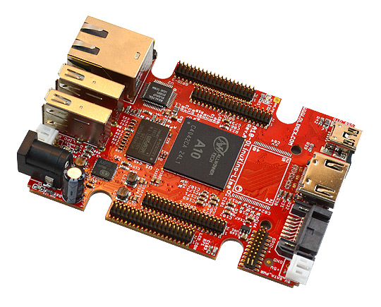

Hardware selection Board¶
The first step in the project was a part of hardware selection. Here I describe some considerations.
I wanted a quick and easy project and wanted a run a batch of about 50 flashing devices. At that rate Money starts counting and investing a little more time on getting cost down can be beneficial.
Also this being a small sideproject I wanted to use as much open hardware and software a possible. This allows me to write about what I learned but also, expecting so spend some evenings on the project, generally make me feel good.
Having spent a considerable amount of time porting Minx3 on the BeagleBone Black knowing that the rest of the world loves the Raspberry Pi I also wanted to consider using Olimex hardware beacause of their open hardware ethics and my previous work on the A13.
BeagleBone Black¶
The BeagleBoard (TI) community was one of the first real open source hardware platform. The documentation of the board in excellent and the SoC is VERY well documented and the community is professional. The device was there before the Raspberry Pi and starting the BeagleBone black the prices are comparable.
Raspberry Pi¶
Raspberry Pi has taken over the world and has become the ducktape for small projects. It has a large, less professional user community base. It’s hardware is not open nor it there good documentation of the BoardCom SoC. The good thing is that it is cheap and that every problem you will encouter has already been solved by somebody else. There are many modules/cases available and I don’t have much experience with the PI. The Raspberry Pi also has know limitations in terms of USB capabilities
The OLinuXino board family¶
Olimex produces open hardware design boards that generally are well priced. I have been following their work for quite a while and do like the way they explain some design consideration in their work. They have different boards and are not backed by a large company e.g. they are the underdog here. The A10-OLinuXino-LIME pictured above is the device I have chosen in the end for this project.
https://www.olimex.com/Products/OLinuXino/open-source-hardware
What board did I choose and why¶
Sometimes you make choices based on experience and sometimes you do some research before you start you project. In this case I needed something fast and needed (as usual?) to make choices without researching every topic. Questions I asked myself where:
- What is it going to cost
- Are the Hardware/Software and Soc open
- Is it easy to find out the status of the project (kernel/debian)
- Does it have a USB host port and possibly some form of networking
- Does it have a display
- Can the usb port power the attached device
Will any of the boards tick all the boxes? Bellow is a table I made (after the fact) on some things I considered while shopping around for a board.
| Board | Price | Case | Mainline Kernel | Open Hardware | Documented Soc | Proper USB | Proper OS | Ways to extend |
|---|---|---|---|---|---|---|---|---|
| BBB (black) | 59,50 | 6,29 | No | Yes | Yes | musb(not great) | Unclear to me | Capes |
| BBB (Green) | 42,95 | 6,29 | No | Yes | yes | musb(not great) | Unclear to me | Capes |
| RyPi | 34,95 | 6,95 | No | Nope | Nope | not great | Yes | Lots of capes |
| Lime | 30,00 | 5,00 | Yes!! | Yes | Nope | yes | Official Debian | UEXT/GPIO |
I also ordered a smaller MIPS based board/OpenWRT from Olimex to give it a try. The BeagleBoard did not make it mainly because I have been using it as my main mail server for the last couple of years and that the debian install on there is getting so old I can’t upgrade it. When going to the beagleboard website it is just hard to understand what the status is of the project. The USB controller while functional has know issues. Next I guess I also wanted something new.
I will at some point need to look into the Raspberry Pi but for this project I need to power phones while flashing the software is it not suitable. It also does not match what I want from hardware (e.g. to be open). I therefore looked at the Olimex boards (ranging from the A13, the A10 and the A20). the Lime is a really small board and the cheapest one was the A10 and it had a nice case.